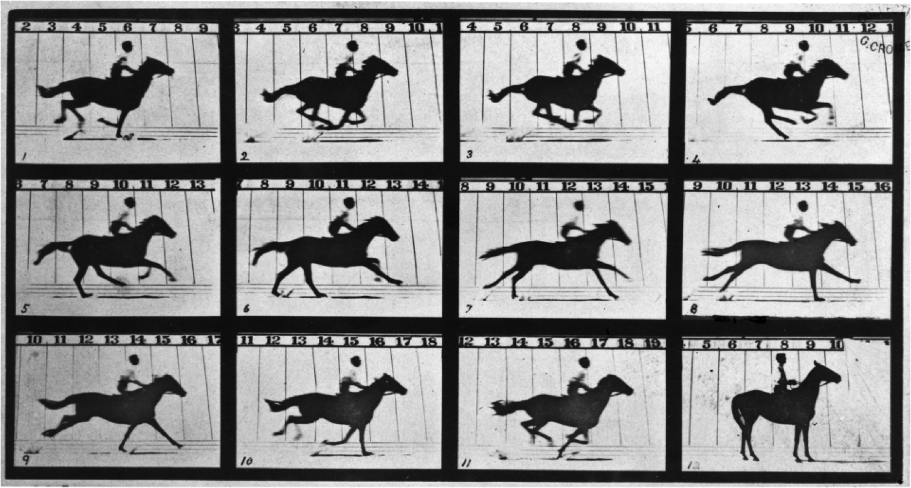
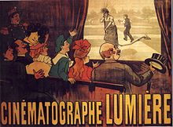
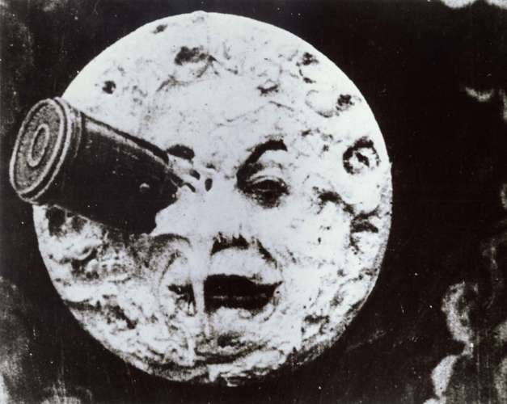
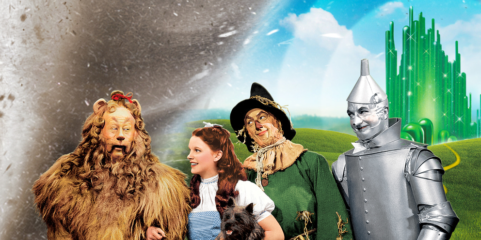

Tech: Now and Then

13 January 2020
Old film reels, the first way to make movies.
Films are extremely important. Films can make you laugh, cry, emphasize, realize, and learn about almost anything. They show the horrors of war to the cutest thing anyone could imagine. But, where did this all start? Why did we think to create things like this? Let's take it to the photographer Eadweard Muybridge to see where this started.
Eadweard Muybridge's Horse in Motion, his first results with his new style of photography.
Eadweard Muybridge used something called chronophotography, or flashing chronological photographs to tell a story or convey motion. This is considered the earliest form of film, as it resembles a moving picture that is visible to the human eye. His first published media with this technique was the Horse in Motion, which showed a horse going to the left. The video of it is below. This "film" was revolutionary, as no-one thought of a way to make a picture move, or at least appear to move.
A poster advertising the Lumiere Brother's movie "L'Arroseur arrose"
The Lumiere brothers were the next major advancement in film. The film was in black and white, and it was completely silent, and it was called "Le Jardinier", or "The Gardener". They were able to create a film about a gardener getting sprayed by a hose by a delinquent boy. Then the gardener catches the boy and spanks him. Even though this is a very mundane event, it shocked people by the sheer novelty of being able to see a moving picture on a screen that illustrated something.
The next era of movies were silent films, or black-and-white films that would be absolutely quiet and would have live accompaniment by narrators, orchestras, or sound effects. These films were easy to overdub to any other country, as there was only a script that one had to read to provide the dialogue. They still only had one shot, or a stationary non-moving camera that only recorded what happened on one point of view.
The first major advancement in film cinematography was the movement of the camera. These films would normally be stagnant to not damage the camera and make the shots easier to do. But, Robert W. Paul in 1897 created the first moving shot that didn't rely on a moving vehicle or other device. These shots were referred to as 'panoramas' in many places where these cameras were available.
The moon in the movie "Le Voyage dans la Lune, the most famous movie by Georges Melies.
The first film to get international distribution was Le Voyage dans la Lune, which was the main factor for Star Film, the company behind the movie, becoming one of the world's largest producers. The movie mostly achieved its distribution through piracy of the movie, but it still was absolutely amazing to see. The movie was 14 minutes long and had its film be 825 feet (251 meters) long. The film was an adaptation of Jules Verne's acclaimed novel "A Trip to the Moon".
Due to Georges Melies's style of filming in a studio, the next major advancement was made by Edwin S. Porter, who filmed in a train for his 12 minute film "The Great Train Robbery". The movie used many techniques that made it stand out, like with the use or camera pans, diagonally composed shots and rear projections that wowed the audience. With this movie, many people realized that movies could make a lot of money. With this realization, companies started to establish movie theaters, establishing films as a new profitable medium.
Once feature films began to become longer due to the invention of multi-film reels that would record much more, theater owners realized that they needed more to keep an audience in their theaters. The price was raised from its original fee, and movie theaters became much more lavishly furnished, as they had marble, brass, and cut glass. Hollywood was also beginning to take over as the main place to film things, as it was usually temperate all-year-round and was much cheaper to get places.
Back in 1925, Warner Brothers was just another company at the time in Hollywood, and they thought to branch out. They acquired a sound-on-disk system that had failed initially due to high production costs and thought to give it a shot. This move forever changed the industry and Warner Brothers' place in history. People wanted to see their idols perform songs and hear what was produced by them, drawing in many crowds.
An image of the Wizard of Oz main cast, which was the first ever Technicolor movie that got very popular and featured live actors.
After that, Technicolor was created as a means to produce massive amounts of film that would be in color. Technicolor initially only worked with a few colors, making it seem somewhat useless due to its limited use, but it eventually gained more colors. It eventually got up to the point where it had almost every color. Unfortunately, this technology was made during the 1930's, so it wasn't widely used until the 1940's. This technology was used for a very long time, as in up until the 2000's. The film material changed little bits, like with VHS and other things, but it still was mostly film. The next major advancement would take place during the 2000's...
The final advancement (to date) is the use of digital film. Digital film is now the premier way to shoot films, as they are easy to store, mass produce, and distribute. It has some slight visual differences, but they're pretty hard to see. Digital cinema has virtually replaced film, but some directors still prefer film over digital.